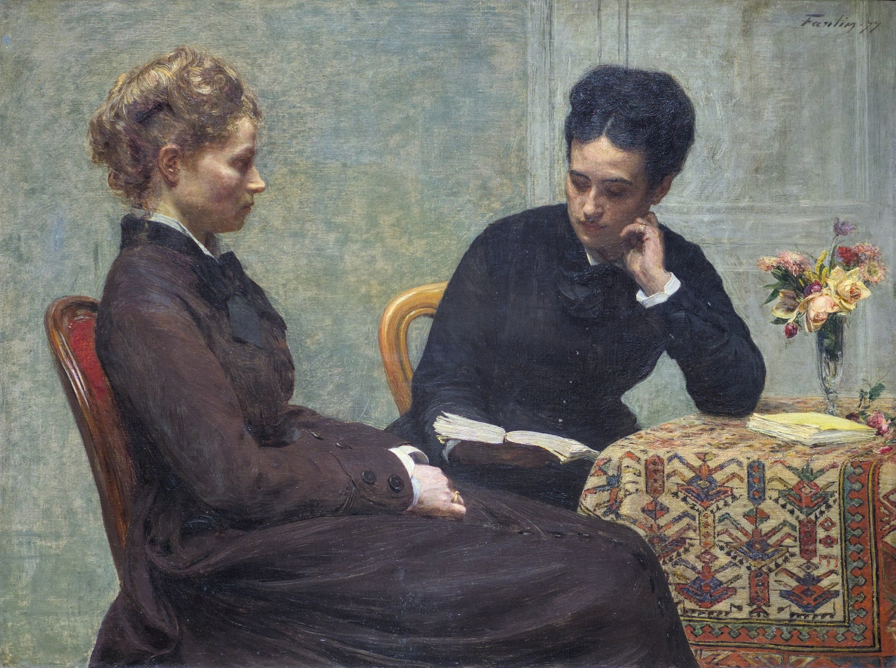

Lettres · Première · Lycée général et technologique
L’oral du bac de français : présenter une œuvre et dialoguer
Neuf séances pour préparer l’oral du bac : la lecture à voix haute, l’explication, la présentation d’une œuvre qui a compté, et le dialogue avec l’examinateur, sans réciter.
Épreuve anticipée de français, épreuve orale : 30 minutes de préparation, 20 minutes de passage. Première partie : lecture à voix haute (2 points), explication linéaire (8 points) et question de grammaire (2 points). Seconde partie : présentation de l’œuvre choisie, puis entretien, sur 8 points. La séance 3 de la séquence entraîne la lecture à voix haute ; une fiche, en annexe, permet de s’entraîner. Aller à la séance 3. La séquence s’appuie sur La Boétie, Discours de la servitude volontaire, et Nathalie Sarraute, Pour un oui ou pour un non, au programme 2026-2027 des voies générale et technologique.

Présentation
Neuf séances de 55 minutes, prévues sur 52, avec à chaque fois un point d’arrêt, une sortie de secours, une trace écrite, un travail de langue corrigé et une prise de parole de chaque élève. Huit d’entre elles suivent les huit tours de la spirale de Gorse. La troisième est consacrée à la lecture à voix haute, qui ouvre l’épreuve et qui est notée sur 2 points. La séquence se termine par un oral blanc complet.
- Séance 1. Une œuvre peut-elle déplacer mon jugement ?
- Séance 2. Présenter l’écrivain sans fabriquer une légende.
- Séance 3. La lecture à voix haute, premier geste de l’épreuve.
- Séance 4. Suivre un texte dans son ordre.
- Séance 5. Lire les paroles et entendre leurs tensions.
- Séance 6. Choisir et défendre ses preuves.
- Séance 7. Comparer sans confondre.
- Séance 8. Répondre à une objection.
- Séance 9. Oral blanc complet.
Deux œuvres principales, communes aux deux voies :
- Étienne de La Boétie, Discours de la servitude volontaire : la littérature d’idées, et une enquête sur ce qui fait durer la domination.
- Nathalie Sarraute, Pour un oui ou pour un non : le théâtre, et une dispute née d’un presque rien. La pièce est lue dans l’édition de la classe.
Les oraux modèles sont écrits sous forme de dialogue, réplique après réplique, entre l’examinateur et l’élève. Ce sont des exemples pour s’inspirer, non des textes à apprendre par cœur. Une version guidée est proposée pour la voie technologique, avec les mêmes critères et le même barème.
L’examinateur : Le livre vous paraît-il accuser les dominés ?
L’élève : Il peut être lu comme une interpellation très forte. Mais je ne voudrais pas en faire un jugement simple contre les victimes. Je distingue la recherche des mécanismes qui soutiennent la domination et la désignation d’une culpabilité individuelle.
La fiche de correction réunit les corrigés des exercices de langue et des grilles d’oral blanc renseignées. On y suit le chemin complet : prestation, note, conseil, reprise.
Le détail de la séance 3 figure plus bas, avec la routine, deux exemples annotés et une grille. Une fiche élève, en annexe, reprend cette séance pour l’entraînement quotidien.
La spirale de Gorse
Huit tours larges qui se resserrent progressivement : rencontrer et situer, construire et questionner, prouver et comparer, dialoguer. Le tracé s’achève par une pointe, non par un centre. La séance 3, consacrée à la lecture à voix haute, s’insère après le tour 2 : elle n’ajoute pas de tour à la spirale. Les tours 3 à 8 correspondent ensuite aux séances 4 à 9.

À la pointe. Défendre un jugement sans empêcher le dialogue.
Séance 3. La lecture à voix haute
Cette séance ouvre le travail de la première partie de l’épreuve, notée sur 2 points. Ce n’est pas un simple déchiffrage : on situe d’abord le texte, brièvement, puis on le lit tout entier, de manière juste, pertinente et expressive. Une fiche élève, en annexe, reprend la séance pour l’entraînement quotidien.

Ce que dit le texte officiel
La lecture commence dès la fin des 30 minutes de préparation. On situe le texte dans l’œuvre ou le parcours associé, en une ou deux phrases, puis on lit le texte choisi par l’examinateur, pas seulement le passage retenu pour l’explication si le texte est plus long.
« le candidat propose d’abord une lecture à voix haute juste, pertinente et expressive du texte choisi par l’examinateur, après l’avoir situé brièvement dans l’œuvre ou le parcours associé. Cette partie est notée sur 2 points. »
La première partie de l’épreuve dure 12 minutes : lecture (2 points), explication linéaire (8 points), question de grammaire (2 points). La seconde partie, présentation de l’œuvre et entretien, est notée sur 8 points.
Pour la première partie, la copie des textes doit rester vierge de toute annotation. On s’entraîne donc à porter les pauses et les appuis dans la tête, pas sur la feuille du jour de l’épreuve.
Ce que l’examinateur attend
Les trois adjectifs de la note de service se laissent préciser ainsi. L’outil d’aide à l’évaluation figure en annexe II de cette même note.
- Juste. On lit les mots du texte, sans en sauter, sans en ajouter. On articule, y compris les noms propres. Les liaisons nécessaires sont faites ; les liaisons interdites sont évitées. En poésie, le e muet et, le cas échéant, la diérèse respectent le vers : nation se dit souvent na-ti-on, trois syllabes.
- Pertinente. La lecture convient au genre (poème, scène de théâtre, prose narrative ou argumentative) et à la situation du passage. La ponctuation guide le souffle et le sens. Le débit permet de tout suivre, sans précipitation et sans lenteur solennelle.
- Expressive. L’intonation montre que le texte a été compris. On appuie certains mots, on baisse parfois le ton, souvent vers la fin d’un poème ou d’une scène. On lève les yeux de temps en temps, pour adresser la lecture. Ce n’est pas un numéro de théâtre, sauf à faire entendre, avec mesure, une réplique vraiment exclamative.
Une lecture préparée se reconnaît en quelques secondes : on sait où respirer, sur quel mot s’arrêter, où la voix peut descendre. Une lecture découverte le jour même se reconnaît aussi.
Écueils fréquents
- Découvrir le texte à voix haute le jour de l’épreuve, sans l’avoir lu debout, une fois au moins, pendant l’année.
- Situer le texte trop longuement, ou oublier de le situer.
- Ne lire que le passage de l’explication, alors que la note de service demande la lecture du texte choisi.
- Avaler les virgules et les points, ou s’arrêter à chaque bout de vers sans respecter les enjambements.
- Lire tout à la même intensité, ou au contraire jouer le texte, gémir, crier.
- Faire une liaison interdite (entre les et haricots, ou entre et et ainsi) ou oublier une liaison nécessaire (vous êtes, les parfums).
- En poésie, compter mal le vers : e muet sauté au milieu de l’alexandrin, ou diérèse oubliée.
- Bâcler la dernière phrase, ou frapper le dernier vers sans raison. La fin d’un texte demande souvent un léger abaissement du ton, sauf si le sens exige autre chose, comme la révélation finale du Dormeur du val.
- Rester le nez sur la feuille, sans jamais adresser la lecture.
Une routine quotidienne, une dizaine de minutes
Mieux vaut une lecture attentive, deux fois, qu’une récitation mécanique apprise vingt fois.
- Lire le texte une première fois, des yeux, et repérer la ponctuation, les mots difficiles, les noms propres.
- Marquer, sur une copie de travail (pas sur celle de l’épreuve), les liaisons nécessaires. En poésie, compter le vers : e muet, diérèse éventuelle, enjambements.
- Choisir deux ou trois appuis de sens, et l’endroit où la voix peut descendre, souvent vers la fin.
- Se lever. Situer le texte en une ou deux phrases, puis le lire à voix haute, jusqu’au bout, sans s’arrêter.
- S’enregistrer, ou lire devant un camarade. Écouter : où a-t-on précipité, avalé une virgule, oublié de lever les yeux ?
- Relire une seconde fois, en ne corrigeant que ces points.
- Refermer la feuille annotée et relire une dernière fois sur une copie vierge, comme le jour de l’épreuve.
Deux exemples annotés
Les signes : le signe = marque une liaison, / une pause brève, // une pause plus nette. Les points médians séparent les syllabes du vers. On n’écrit rien de tout cela sur la copie de l’examen.
Un quatrain : Arthur Rimbaud, « Le Dormeur du val », 1870
Dernier quatrain du poème, recueil dit Cahier de Douai. Texte du domaine public. Vers de douze syllabes (alexandrins).
Les=parfums ne font pas frissonner sa narine /
Il dort dans le soleil, la main sur sa poi·tri·ne
Tran·quil·le. // Il a deux trous roug’ au cô·té droit.
- Liaison : les=parfums. Pas de liaison après dort (le t ne se prononce pas).
- Point-virgule après narine : une pause, plus légère qu’un point.
- Enjambement : on ne s’arrête pas à poitrine, on enchaîne jusqu’à Tranquille, puis l’on pose la voix.
- Dernier vers, douze syllabes : Tran·quil·le (le e se prononce) Il a deux // trous roug’ au cô·té droit. Le e de rouges s’élide devant au.
- Le point après Tranquille est la grande pause du poème. On laisse un silence, sans le dramatiser.
- La dernière phrase n’est ni criée ni avalée. Le choc est dans le fait, « deux trous rouges », dit clairement, un peu plus bas.
Une phrase de prose : Étienne de La Boétie, Discours de la servitude volontaire
Texte du domaine public, seizième siècle. La phrase est courte, mais tout y tient : l’adresse, la virgule, la chute.
« Soyez=résolus de ne servir plus, / et vous voilà libres. // »
- Liaison : Soyez=résolus. On ne force pas d’autres liaisons.
- La virgule après plus coupe le geste en deux : d’abord la résolution, puis le résultat.
- Ce n’est pas un cri de ralliement. C’est une adresse, presque simple. La voix peut s’abaisser légèrement sur libres, et l’on laisse le point exister.
- On articule résolus, servir, libres, sans précipiter la fin de phrase.
Même démarche pour un poème, une scène ou un extrait d’idées de votre récapitulatif : situer, lire le texte entier, faire entendre la ponctuation et le sens.
Grille d’auto-évaluation
Après une lecture, on coche une colonne, et l’on note ce que l’on retravaille. La grille peut aussi servir à un camarade qui vous écoute. Elle figure également dans la fiche à télécharger.
| Critère | Oui | En partie | Pas encore |
|---|---|---|---|
| J’ai situé le texte en une ou deux phrases, avant de lire. | |||
| J’ai lu le texte entier, sans sauter de mots, sans en ajouter. | |||
| L’articulation et le débit permettent de tout suivre. | |||
| Les liaisons nécessaires sont faites, sans liaisons interdites. | |||
| En poésie : le e muet et les diérèses respectent le vers. | |||
| La ponctuation s’entend : pauses, questions, exclamations. | |||
| L’intonation montre que j’ai compris le texte. | |||
| Je lève les yeux de temps en temps, j’adresse la lecture. | |||
| La fin n’est ni bâclée ni surjouée. | |||
| Je n’ai pas joué une scène : j’ai fait entendre le sens. |
Pour se souvenir, le jour de l’épreuve. Situer le texte, brièvement. Lire le texte choisi, jusqu’au bout. Faire entendre le sens, sans le jouer.
Téléchargements
Six documents, chacun en PDF, Word et LibreOffice. Vous pouvez utiliser et adapter ces documents en citant leur autrice, sans usage commercial, et en partageant vos versions dans les mêmes conditions. CC BY-NC-SA 4.0.
-
Annexe. Fiche élève : la lecture à voix haute (4 pages)
PDF Word (.docx) LibreOffice (.odt) -
Séquence (58 pages)
PDF Word (.docx) LibreOffice (.odt) -
Fiche professeur (5 pages)
PDF Word (.docx) LibreOffice (.odt) -
Fiche de correction et grilles renseignées (15 pages)
PDF Word (.docx) LibreOffice (.odt) -
Version dys (8 pages)
PDF Word (.docx) LibreOffice (.odt) -
Grille d’oral blanc, auto-évaluation et oral croisé (7 pages)
PDF Word (.docx) LibreOffice (.odt)
Pour l’écrit, voir aussi Dissertation et essai : les épreuves du bac en marche.
conçu par Madame Carole Paoli Pompougnac, mis en page par Grok
Henri de Toulouse-Lautrec, « Un examen à la faculté de médecine de Paris », 1901, huile sur toile, musée Toulouse-Lautrec, Albi, domaine public. Photographie : Didier Descouens, Wikimedia Commons, domaine public. Henri Fantin-Latour, « La Lecture », 1877, huile sur toile, musée des Beaux-Arts de Lyon, inv. B 628, domaine public. Photographie : Romainbehar, Wikimedia Commons, CC0. Schéma de la spirale de Gorse : illustration originale, conçue par Madame Carole Paoli Pompougnac.
_Un_examen_%C3%A0_la_facult%C3%A9_de_M%C3%A9decine_de_Paris_-_Toulouse-Lautrec_1901_MTL.216.jpg){kind=link}